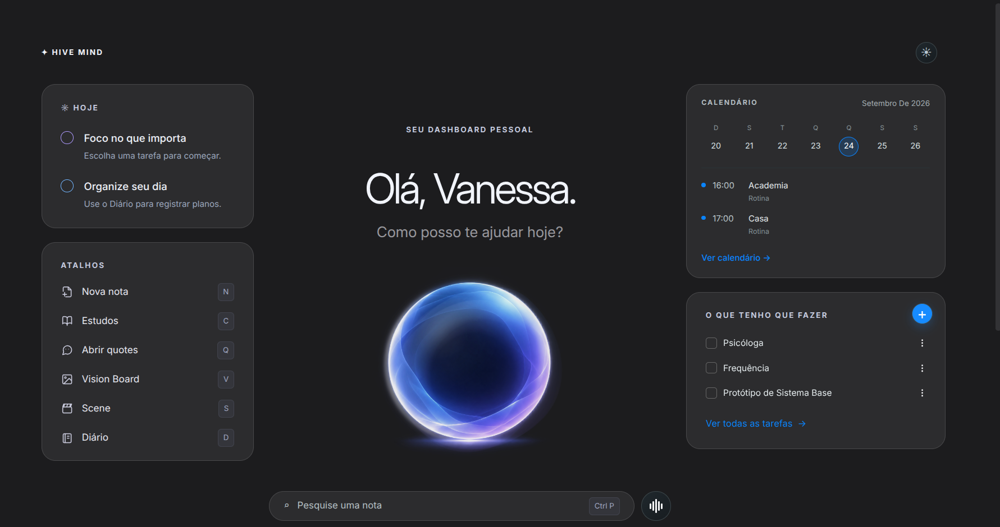
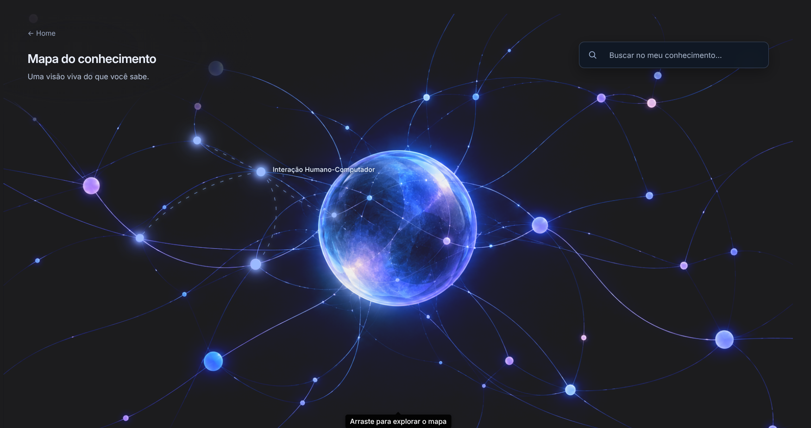
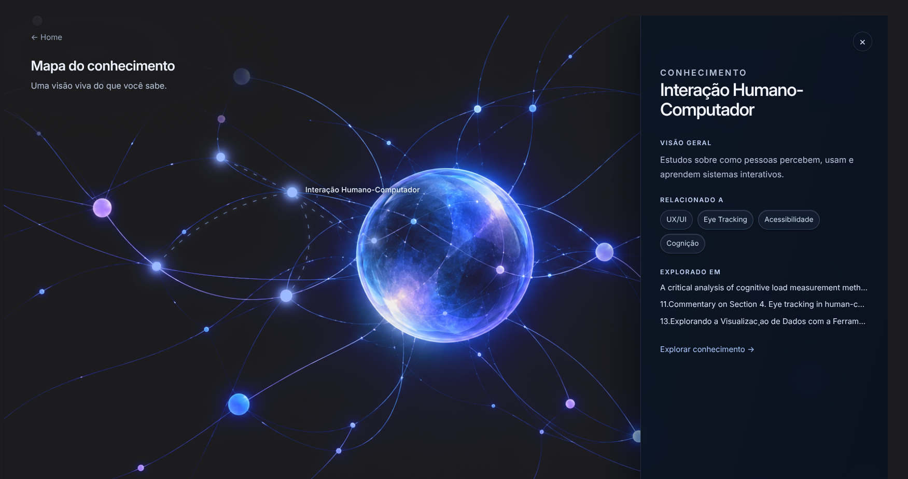

← Todos os projetos
04 / SISTEMA PESSOAL
Hive Mind — Gestão Pessoal
Um lugar para conectar o que faço, aprendo e descubro.
Product Design · Obsidian · JavaScript
O Hive Mind reúne planejamento, tarefas, projetos, conhecimento e cultura em um espaço pessoal construído no Obsidian.
01 / SISTEMA
Rotina e conhecimento no mesmo espaço.
O painel inicial aproxima tarefas, calendário e atalhos. Nos espaços de conhecimento, leituras e projetos mantêm contexto para continuar pesquisas e estudos.

02 / CONHECIMENTO
Relações visíveis.
O mapa de conhecimento oferece uma visão das relações entre temas e leituras. Ao selecionar um assunto, um painel mostra contexto e referências relacionadas.

